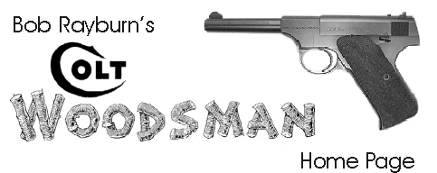

Send me email.
I usually have some parts for sale on Ebay.
Click here
to see my Ebay parts auctions.
To share my interests in things other than guns, visit
Bob Rayburn's personal home page
The Serpentine Colt is a registered trademark of Colt's Manufacturing Company, Inc. Hartford, CT
© 1985 - 2005 by Bob Rayburn. All rights reserved. No portion may be reproduced without written permission from the author. Last updated on Sept 2, 2005.
This Colt Woodsman site is hosted by
My Colt Woodsman Pocket Guide has evolved over a period of 15-20 years from a single 8.5" x 11" sheet of paper to the current 96 page shirt pocket size booklet. It includes numerous photos, tables, and other information for the Woodsman owner. The price of $10 includes free shipping. If you are in the United States or one of the other countries served by Paypal you can use your credit card to post payment via Paypal's secure server.
PO Box 97104W
Tacoma, WA 98497
Collecting the Colt Woodsman is a hobby for me, not a business. Please note that I do not do appraisals, so please do not ask me to estimate the value of your gun. I have provided input to the Blue Book of Gun Values for several years, and as of the 2005 edition I also contribute to The Standard Catalog of Firearms. Each of these publications is updated annually with Colt Woodsman values and descriptions based on my recommendations to the editor. The two publications are not identical, and each has certain advantages over the other. I recommend that you consult both publications and then make your own appraisal. You can order either one or both by clicking on the links below.
 Standard Catalog Of Firearms, 15th Edition |  Blue Book of Gun Values, 25th Edition |
If you order via the links on this page that will help support the cost of maintaining this Woodsman web site, while the cost to you will be exactly the same as if you ordered directly. Your help will be appreciated.
If you do not feel qualified to do your own appraisal with the aid of these books, Blue Book Publications will do a written appraisal for you for only $20. There are links on their web site to their appraisal service. They also have experts available to answer specific questions about almost any type of gun for a small fee.
Good News for Woodsman Collectors: The Federal Bureau of Alcohol, Tobacco, and Firearms has now classified as "Curios and Relics:"
"Colt, Woodsman, .22 caliber semiautomatic pistols, all models, all series, all serial numbers, (to include Match Target, Challenger, Huntsmen, and Targetsman), made prior to 1978"See it on the BATF web site at: http://www.atf.treas.gov/firearms/curios/0301to0402update.htm
The fact that the Woodsman has been classified as a Curio and Relic by the Bureau of Alcohol, Tobacco, and Firearms (BATF) makes life a lot easier for a Woodsman collector who has a Federal Collector's License. A licensed collector can buy a "Curio and Relic" for his own collection from someone in another state, with no requirement to route the purchase through a federally licensed dealer.
One of the finest Colt Woodsman collections ever assembled was listed on this web site in December, 2002. The collection has been sold, but photos and descriptions of the entire collection are being kept online here for reference by present and future collectors. You can view it by clicking on A Fine Collection